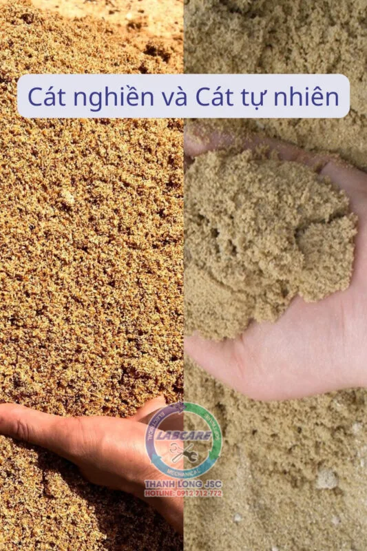
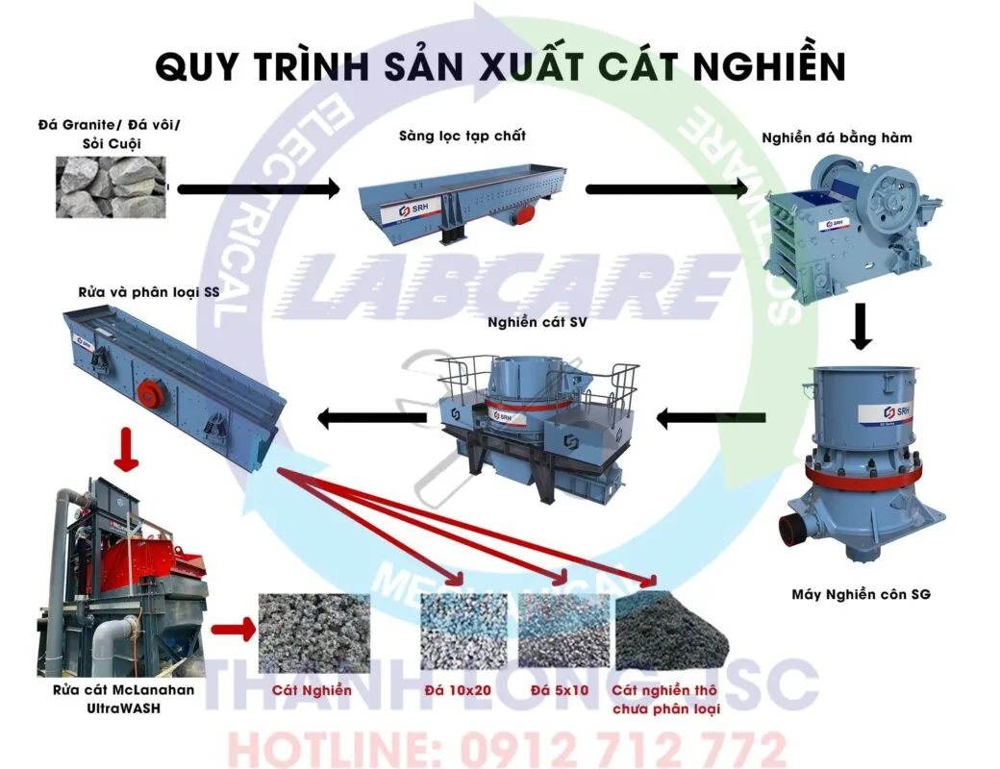
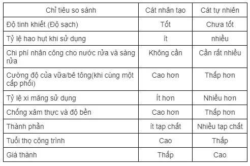

Với sự phát triển của sự nghiệp công nghiệp hóa, hiện đại hóa đất nước. Sự gia tăng về dân số và sự phát triển của xã hội ngày càng cao, dẫn đến việc các công trình xây dựng ngày càng được mở rộng. Tốc độ khai thác cát, sỏi ngày càng nhiều vượt quá sự cho phép của BTNVMT. Làm cho cát tự nhiên ngày càng bị thiếu hụt nghiêm trọng.
Vậy không có cát tự nhiên thì vật liệu nào có thể thay thế được? Công trình nào cũng cần có cát làm VLXD, không có cát sao làm đường được?
Giải pháp thay thế cho cát tự nhiên hiện nay chính là cát nhân tạo. Cát nhân tạo được tạo ra từ đâu và như thế nào? Chúng ta cùng tìm hiểu qua bài viết này.
Bản chất của cát tự nhiên và cát nhân tạo
Cát tự nhiên là gì?
Cát tự nhiên được tạo ra từ những nguồn nguyên liệu như cát sông, cát biển, cát núi, cát trên sa mạc, mỗi loại có những đặc điểm khác nhau. Tuy nhiên, cát được dùng trong xây dựng chủ yếu là cát sông. Hiện nay, cát được dùng trong xây dựng đang bị thiếu hụt trầm trọng.

Cát nhân tạo là gì?
Cát nhân tạo hay còn gọi là cát nghiền được làm từ nhiều nguồn nguyên liệu khác nhau và có thể thay thế cho cát tự nhiên. Nhiều dự án xây dựng quy mô lớn như xây dựng cao tốc Bắc Nam cần rất nhiều cát. Chính vì vậy, cát nhân tạo được tạo ra để thay thế cho sự thiếu hụt cát tự nhiên. Tránh tình trạng thiếu hụt cát khi đang thi công thúc đẩy sự phát triển nhanh chóng cho ngành vật liệu xây dựng. Cát nhân tạo được tạo ra từ dây chuyền nghiền cát nhân tạo.
Dây chuyền nghiền cát nhân tạo

Các thiết bị chính trong dây chuyền nghiền cát nhân tạo
- Cấp liệu rung: có vai trò là chứa liệu và cấp liệu đều đặn cho các thiết bị nghiền trong một dây chuyền
- Máy nghiền sơ cấp: có mục đích dùng để nghiền nhỏ vật liệu thô các thiết bị thường được dùng chủ yếu là máy nghiền hàm hay nghiền phản kích.
- Máy nghiền thứ cấp: Nghiền vật liệu có độ cứng thấp, thường dùng nghiền côn hoặc cặp hàm thứ cấp. Để nghiền nhỏ vật liệu hơn.
- Máy nghiền cát: máy nghiền ly tâm trục đứng được sử dụng để vo tròn viên đá hay nghiền đá thành cát với ưu điểm là đáp ứng yêu cầu tiêu chuẩn của cát thành phẩm.
- Máy rửa cát: Máy rửa cát mclanahan đang được nhiều chủ đầu tư quan tâm tới, máy rửa kết hợp tận thu cát mịn thu được sản phẩm sau nghiền đạt tiêu chuẩn đầu ra.
Các thông số kỹ thuật khác nhau của cát nhân tạo
+ Độ mịn của cát thô là 3,7-3,1 và cỡ hạt trung bình từ 0,5mm trở lên.
+ Độ mịn của cát trung bình là 3,0-2,3 và cỡ hạt trung bình là 0,35mm đến 0,5mm.
+ Độ mịn của cát mịn là 2,2-1,6 và cỡ hạt trung bình từ 0,25mm đến 0,35mm.
+ Độ mịn của cát siêu mịn là 1,5 – 0,7 và đường kính trung bình từ 0.25 mm trở xuống.
Cát tự nhiên và cát nhân tạo khác nhau như thế nào?
* Nguồn cung cấp ổn định.
Do khai thác nhiều năm nên cát tự nhiên ngày càng ít. Với giá cả tăng cao, nguồn cung và chất lượng cát tự nhiên không được đảm bảo. Tuy nhiên, có quá nhiều tài nguyên cát nhân tạo. Và nó có thể tạo ra cát nhân tạo miễn là có đá. Chất thải xây dựng đô thị, quặng đuôi sỏi, mạt đá, sỏi và quặng mỏ có thể được sử dụng làm nguyên liệu cát nhân tạo.

Giá cả.
Giá cát nhân tạo mỗi nơi mỗi khác nhưng về cơ bản là rẻ hơn rất nhiều so với cát sông.
Đây là Sự khác biệt dễ thấy nhất giữa cát nhân tạo và cát tự nhiên
Bảo vệ môi trường.
– Việc sản xuất cát nhân tạo truyền thống sẽ gây ra các vấn đề về môi trường như ô nhiễm khói bụi. Tuy nhiên, với sự cải tiến liên tục của quy trình làm cát, việc sản xuất hiện áp dụng cấu trúc khép kín hoàn toàn và mỗi máy đều có cài đặt phun nước giúp ngăn bụi tràn ra ngoài.
– Việc khai thác cát sông tự nhiên tùy tiện sẽ làm thay đổi hình dạng bề mặt đáy lòng sông, sau đó làm thay đổi hướng dòng nước, sẽ hình thành các chế độ dòng chảy phức tạp như xoáy, chảy ngược. Những hiện tượng này sẽ còn ảnh hưởng đến lòng sông, các đập và các bãi cát ven sông ở phạm vi rộng hơn do ảnh hưởng đến quá trình tích tụ trầm tích hoặc làm cho phù sa bị xói mòn, gây ảnh hưởng đến an toàn đê sông, an toàn cầu và an toàn giao thông thủy.
Mạnh mẽ và độ bền.
Tính năng rắn của cát nhân tạo kém hơn một chút so với cát sông, nhưng nó vẫn có thể đáp ứng tiêu chuẩn cát quốc tế. Tuy nhiên, đối với những công trình thường xuyên chịu tác động ma sát thì cần kiểm soát tỷ lệ vôi – cát của bê tông, chỉ số nghiền và hàm lượng bột đá của cát.

Hàm lượng bột đá.
– Bột đá là vật liệu có kích thước hạt nhỏ hơn 75μm được trộn trong cát nhân tạo. Nói chung, bê tông thông thường cần ít hơn 10% bột đá, và bê tông cường độ cao yêu cầu ít hơn 5%.
– Qua quá trình kiểm tra xi măng, vữa và bê tông, không có sự khác biệt giữa cát nhân tạo và cát tự nhiên. Nói chung, lượng nước tiêu thụ của cát nhân tạo lớn hơn một chút. Tuy nhiên, cường độ của bê tông về cơ bản là không thay đổi.
Mức độ kết dính.
– Độ hạt của cát nhân tạo không đều hơn. Khi nó được kết dính với các vật liệu xây dựng như xi măng, nó có xu hướng có độ bám dính tốt hơn, chịu nén nhiều hơn và tuổi thọ dài hơn.
– Sau khi cát tự nhiên trải qua quá trình phong hóa tự nhiên, tác động của sông và xói mòn, bề mặt có độ nhẵn nhất định nên hiệu quả kém khi kết dính với các vật liệu khác ở giai đoạn sau.
Để có dây chuyền nghiền cát nhân tạo phù hợp với kinh phí và tiêu chí của mình. Máy Nghiền đá Thanh Long chuyên cung cấp thiết bị máy nghiền phù hợp với từng đơn vị.
Hotline: 0912 – 712 – 772